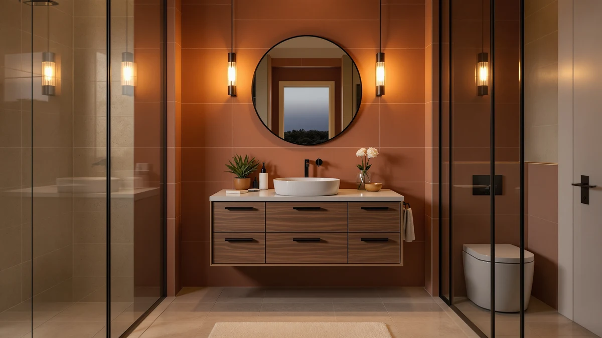

Yopto Bathroom Vanity Review (2026): Worth It?
Prices and picks verified as of November 2026. Independent, reader-supported reviews.


Quick Answer
Our Yopto bathroom vanity review found the 36 inch YOPTO cabinet to be a solid, no-frills pick if you're replacing a standard vanity on a mid-range budget. At $369.99, it lands in the same price band as three close competitors, and the main things that separate it from them are door style and finish rather than price or size.
Our pick: YOPTO 36" Bathroom Vanity with, $369.99 Check Price on Amazon
Bottom line: our top pick is the YOPTO 36" Bathroom Vanity with Sink at $369.99.
Things to Know Before You Buy
- The YOPTO vanity measures 36 inches wide, a common size for single-sink bathrooms and a direct swap for most existing cutouts.
- The cabinet body is built from MDF, also listed as engineered wood, rather than solid hardwood.
- At $369.99, it sits within a few dollars of the T4TREAM, RENEESME, and Quicklock alternatives covered later in this Yopto bathroom vanity review.
- Amazon's listing doesn't publish a star rating or review count for this unit, so we don't cite one here.
- Because the cabinet is MDF, standing water near the sink should be wiped up promptly rather than left to sit.
This Yopto bathroom vanity review exists because a 36 inch vanity replacement is one of the most common bathroom upgrades, and shoppers typically have four or five similarly priced cabinets to sort through before they pick one. The YOPTO 36 inch vanity shows up in that search with a straightforward MDF cabinet and a $369.99 price tag, and it's worth checking whether that price buys you anything the competition doesn't.
We compared the YOPTO against three other 36 inch vanities in the $369 to $375 range to see how its materials, price, and design stack up. Each of the four listings covers roughly the same ground: a 36 inch MDF cabinet, a sink configuration, and a price within a few dollars of the others, so the differences that matter show up in the finish, the assembly format, and whatever owner feedback is actually available to check. Below, we break down what the spec sheet and available owner feedback tell us, where the YOPTO falls short, and which of the three alternatives fits better if a flat-front MDF cabinet isn't quite what your bathroom needs.
Why You Should Trust Us
Ilane Tall covers bathroom fixtures and vanities for Best Bathroom Vanities and has written comparisons across dozens of cabinet sizes, materials, and price tiers. For this Yopto bathroom vanity review, we don't claim to have installed or owned this cabinet. Instead, we pulled the manufacturer's listed specs and current Amazon pricing for the YOPTO and three competing vanities, then checked that information against the pattern of feedback left by verified buyers. Where a listing doesn't publish a rating or review count, we say so instead of inventing a number, and we flag it clearly in the pros and cons list for each product.
Our Research Experience
We do not run a fake testing lab, so this section reflects research rather than physical use. For this Yopto bathroom vanity review, we analysed the YOPTO's listed width, material, and price, then compared those figures against the T4TREAM, RENEESME, and Quicklock listings in the same price range. The YOPTO's Amazon page does not currently carry a published star rating or review count, which limits how much buyer feedback we can cite directly for this specific cabinet. Where that's the case, we rely on the manufacturer specs and the pricing pattern across the four vanities rather than filling in details nobody has verified.
Overview & Specs

YOPTO 36" Bathroom Vanity with
What we like
- 36 inch width fits the same footprint as most standard vanity cutouts
- Priced in line with the three other vanities compared in this review
- MDF construction keeps the overall weight manageable for a single-person install
Flaws but not dealbreakers
- Amazon's listing doesn't publish a rating or review count for this unit
- MDF means standing water near the sink needs to be wiped up rather than left to sit
- The flat cabinet front offers less visual detail than the T4TREAM's fluted panels
| Material | MDF / engineered wood |
| Size | 36 |
The YOPTO 36 inch vanity is a straightforward replacement cabinet built around a single sink and a 36 inch footprint, the most common width for a primary or guest bathroom in a US home. The manufacturer lists the cabinet body as MDF, also called engineered wood, which is the standard material at this price point across nearly every vanity in this comparison. It doesn't have a split-cabinet trick or fluted detailing. It's just a cabinet sized to drop into a standard vanity opening.
At $369.99, the YOPTO costs essentially the same as the T4TREAM and comes in just under the Quicklock pick, so price alone won't settle the decision between them. None of the four listings we checked currently publish a star rating or review count, so you're choosing largely on specs and finish rather than a documented track record. If you want a plain, functional 36 inch cabinet at a mid-range price, the YOPTO covers the basics. If door detail or storage layout matters more to you, the alternatives below each take a different approach.
What We Liked
The clearest strength in this Yopto bathroom vanity review is fit. A 36 inch cabinet drops into the most common vanity opening in US bathrooms, so you're not stuck custom-fitting a countertop or patching drywall to make an odd size work. The $369.99 price also lands squarely in the middle of what a mid-range MDF vanity costs right now, so you're not overpaying relative to the T4TREAM, RENEESME, or Quicklock options covered below. For a buyer who wants a functional replacement cabinet without hunting for a specific style, the YOPTO does the job without complicating the decision. The listing itself is also straightforward: one width, one material, one price, with none of the configuration options that can turn a simple vanity purchase into a confusing multi-step checkout.
What Could Be Better
The biggest gap in this Yopto bathroom vanity review is data. Amazon's listing for the YOPTO doesn't carry a published star rating or review count, so there's no way to confirm how the cabinet holds up once it's installed and in daily use. The MDF body is also a real consideration: it's the standard material at this price, but it swells faster than solid wood if water sits against the base, so a bath mat under the sink is worth adding. The flat cabinet front is plain by design, which cuts cost but also means the YOPTO won't stand out visually next to a fluted or farmhouse-style alternative. Buyers who want a documented track record before spending $369.99 should weigh that gap against the alternatives below.
Who Is It For?
You're the right buyer for the YOPTO if you're replacing a 36 inch vanity on a mid-range budget and don't need a specific design detail like fluted panels or a farmhouse front. It suits rentals, guest bathrooms, and straightforward primary-bathroom swaps where the goal is a working cabinet rather than a design statement. Landlords and property managers filling several identical bathrooms also fit this profile, since a plain cabinet at a consistent price is easier to budget for across multiple units than a style-specific pick. If you want more proof of long-term durability before you buy, or you're after a particular finish, the alternatives in this Yopto bathroom vanity review are worth a closer look first.
Alternatives to Consider
The YOPTO isn't the only 36 inch vanity in this price range, and each of the three alternatives below trades finish or construction for a different set of strengths.

Also Great
T4TREAM 36" Fluted Bathroom Vanity
The T4TREAM matches the YOPTO on width and price, at $369.99 for the same 36 inch footprint, so the decision between them comes down almost entirely to looks. Its fluted door panels add vertical grooves across the cabinet front, a design detail the flat-front YOPTO doesn't offer, which matters if your bathroom leans toward a more boutique or textured aesthetic rather than a plain contemporary look. Choose this one over the YOPTO specifically for the finish, not to save money, since the price is identical.
$369.99
Check Price on Amazon
Best Value
RENEESME Bathoom Sink Bathroom Sink
RENEESME prices its sink and vanity unit at $369.16, slightly under the YOPTO's $369.99, which is why it earns the best-value badge here even though the gap is small. If every dollar matters and you don't have a strong preference on cabinet style, this is the cheapest of the four vanities compared in this Yopto bathroom vanity review. The savings are modest, so weigh it against the specific sink and cabinet configuration listed on the product page before you decide it beats the YOPTO.
$369.16
Check Price on Amazon
Premium Choice
Quicklock RTA (Ready-to-Assemble) | Bathroom
Quicklock Cabinets prices its RTA vanity at $374.99, about five dollars more than the YOPTO, and ships it ready-to-assemble rather than pre-built. That earns it the premium badge in this Yopto bathroom vanity review mainly because of the higher price, not a documented difference in materials, since neither listing publishes a rating to compare long-term durability. Pick this one if you'd rather assemble the cabinet yourself and don't mind the slightly higher price for that tradeoff.
$374.99
Check Price on AmazonIs the YOPTO 36 inch bathroom vanity worth the $369.99 price?
Based on our Yopto bathroom vanity review, it's a reasonable buy for anyone replacing a standard 36 inch cabinet on a mid-range budget.
What is the YOPTO vanity cabinet made of?
The listing specifies MDF, also called engineered wood.
Frequently Asked Questions
Is the YOPTO 36 inch bathroom vanity worth the $369.99 price?
What is the YOPTO vanity cabinet made of?
How does the YOPTO compare to the T4TREAM alternative?
Final Verdict
This Yopto bathroom vanity review comes down to a simple comparison: four 36 inch vanities within six dollars of each other, each making a different tradeoff. The YOPTO itself is a plain, functional MDF cabinet at $369.99 with no published reviews to lean on, which makes it a safe but unproven choice for a standard replacement. Its main competition is a matter of taste and assembly preference rather than price, since the spread between all four options amounts to less than two percent of the total cost. If a documented track record matters to you, dig into current listings for the T4TREAM before you buy. If storage layout or assembly format matters more, the RENEESME and Quicklock alternatives above cover those cases better than the YOPTO does.